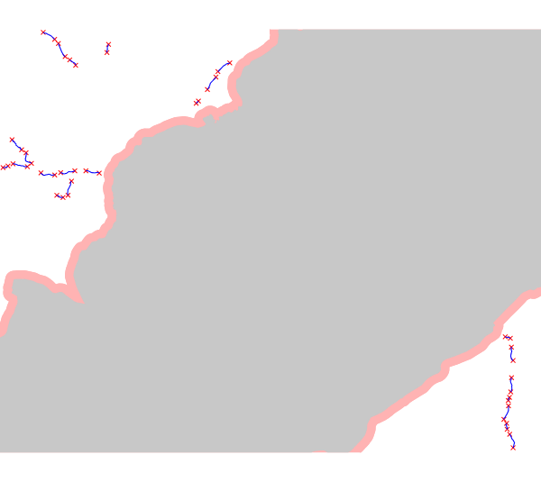
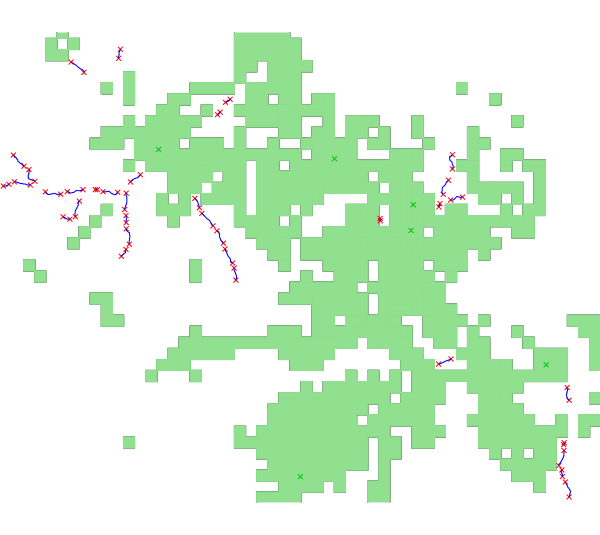

- elevation=name [required]The power (kW) is defined as:
raster map, to calculate the gross head
- river=name [required]
vector on which the potential plants will be computed
- efficiency=double [required]
efficiency of the plant
- len_plant=double [required]
maximum length of the plant
- len_min=double [required]
minimum plant length
- distance=double [required]
minimum distance among the plants
- output_plant=name [required]
name of the output vector with the potential segments
- discharge_current=name [required]
current discharge; raster for each point of these rivers or raster map with the legal discharge
[required (only if discharge_current=currentdischarge)]- area=name [optional]
- mfd=name
minimum amount of water to remain in the river to preserve the ecosystem
In this case, the discharge considered in the calculation will be the current discharge minus the MFD read in your input raster map.
The module r.green.hydro.discharge can compute the raster map of the MFD according to the legislation of some regions.
or
- discharge_natural=name
discharge of the river without considering the structures exploiting the water
- percentage=double
percentage used to calculate the MFD as an amount of the natural discharge
areas to exclude from the planning of hydropower stations; only the rivers outside these excluded areas will be considered to compute the potential plants
- buff=double [optional]
buffer around the excluded areas
- points_view=name [optional]
input vector map with points of interest
- visibility_resolution=float [optional]
vision from the points of interest
An area corresponding to the fields of vision from the points of interest is computed, the latter correspond to visibility zones.
You can choose to exclude these areas or the areas where several visibility zones are superimposed.
- n_points=integer [optional]
number of points for the visibility corresponding to the number of visibility zones which are superimposed
For example, if this number is 3, the areas where two or less visibility zones are superimposed will be excluded.
- output_vis=name [optional]
name of the output vector with the viewed areas
- p_min=double [optional]
minimum mean power of the plant
where η is the efficiency of the plant
ρ the density of water (1000 kg/m3)
g the gravity term (9,81 m/s2)
Q the discharge of the river (m3/s)
Δh the gross head of the considered segment (m)
r.green.hydro.recommended \
elevation=elevation \
river=availablestreams \
efficiency=0.9 \
len_plant=200 \
len_min=10 \
distance=100 \
output_plant=output_plant \
discharge_current=currentdischarge \
mfd=mvf \
area=nationalparks \
buff=100 \
p_min=20
d.vect map=output_plant color=blue
v.buffer input=nationalparks output=buff_park distance=100
d.vect map=buff_park7 color=0:128:0 fill_color=144:238:144 width=1
1) In the first case, the code used is:
r.green.hydro.recommended \ discharge_current=currentdischarge \ discharge_natural=naturaldischarge \ percentage=25.00 \ river=availablestreams \ elevation=elevation \ efficiency=0.8 \ len_plant=400 \ len_min=10 \ distance=150 \ area=nationalparks \ buff=200 \ output_plant=potentialplants d.vect map=potentialplants color=blue v.buffer input=nationalparks output=buff_park distance=200 d.vect map=buff_park color=255:179:179 fill_color=255:179:179 width=1
This command calculates the energy potential for a range of plant length from 10 to 400 m and a distance between plants of 150 m. The areas with the national park and a buffer of 200 m around it are excluded. The discharge considered here is the current discharge of rivers subtracted by 25% of the natural discharge (the latter corresponds to the MFD).

output vector map: superimposition of the potential segments vector file (potentialplants, in blue), the excluded national park (in grey) and the buffer (in light red)
2) In the second case, the code used is:
r.green.hydro.recommended \ discharge_current=currentdischarge \ mfd=mfd \ river=availablestreams \ elevation=elevation \ efficiency=0.8 \ len_plant=400 \ len_min=10 \ distance=150 \ points_view=pointsinterest \ n_points=1 \ output_plant=potentialplants \ output_vis=vis d.vect map= potentialpoints color=red d.vect map= potentialplants color=blue d.vect map= pointsinterest color=green d.vect map= vis color=144:224:144 fill_color=144:224:144 width=1
This command calculates the energy potential for a plant length range from 10 to 400 m and a distance between plants of 150 m. The visibility zones from each point of interest are excluded. The discharge considered here is the current discharge of rivers subtracted by the MFD. The MFD was calculated previously and computed in a raster map.

output vector map: superimposition of the potential segments vector file (potentialplants, in blue), the points of interest (in green) and the visibility zones (in light green)